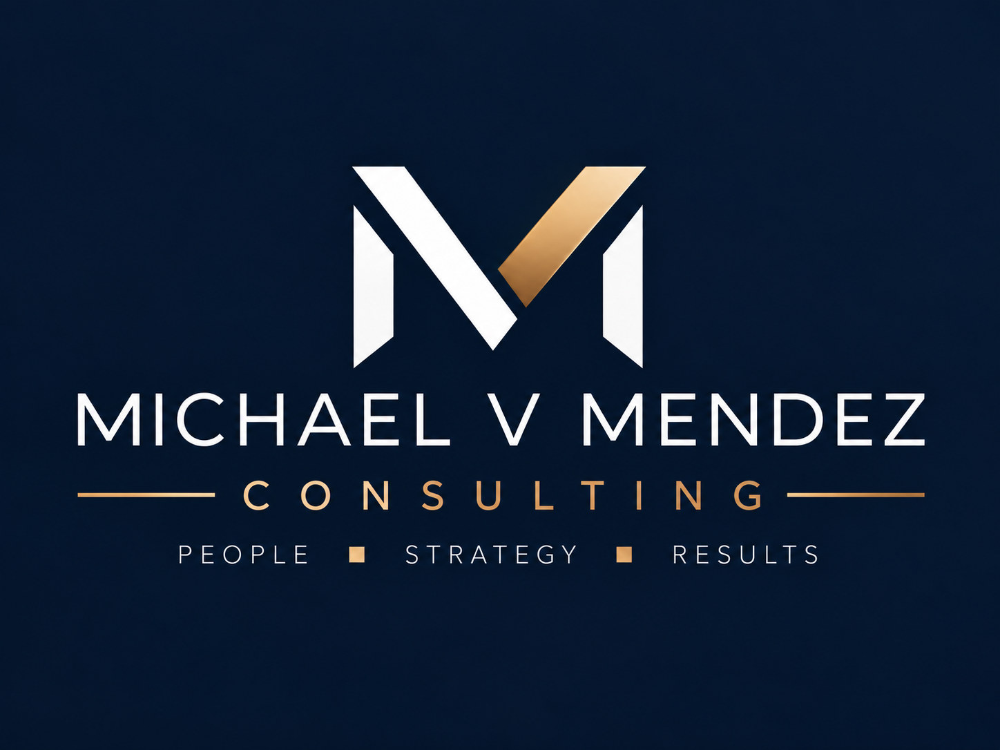
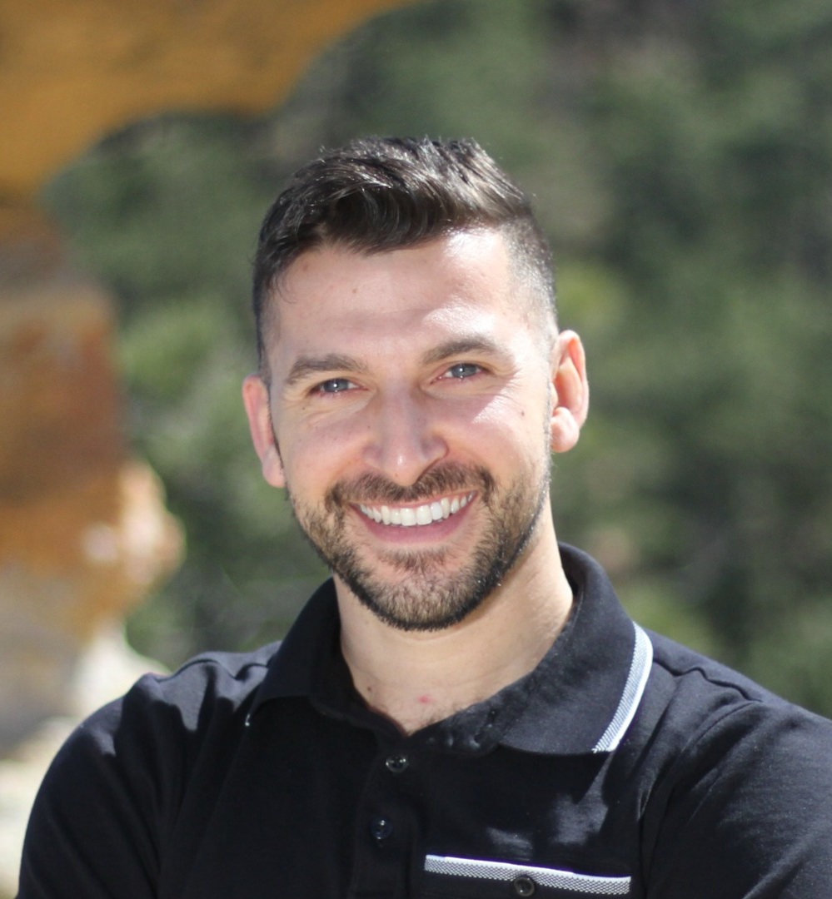

Start with people.
Understand who the work is for, what they need, and what the team can realistically sustain. Growth should strengthen the experience of the people you serve—not simply create more activity.

Philosophy & approach · Client guide
The people, decisions, and practical work behind your next stage.
Business & private practice growth
AI product development · Nonprofit expansion
Running · College fit · Recruiting strategy
WORKING DRAFT FOR MICHAEL’S REVIEW
Proposed philosophy and offer language—not a finished client handout.
01 / The proposed philosophy
A good plan connects the outcome you want with the people and systems needed to make it possible.
Understand who the work is for, what they need, and what the team can realistically sustain. Growth should strengthen the experience of the people you serve—not simply create more activity.
Turn a broad ambition into clear choices: what matters first, what is outside scope, who owns each step, and what needs to be true before you move forward. Technology should serve that plan.
Agree on the deliverable and how you will judge it. A result may be a launch decision, a workflow people can use, a build-ready product plan, or a pilot your board can evaluate. Revenue, funding, athletic performance, and admissions outcomes cannot be promised.
See the whole system. Choose the next useful step. Build the capacity to keep moving.
For Michael: these are proposed principles drawn from the direction you described. Your workbook answers should supply your own language, examples, and any corrections.
02 / Meet Michael V. Mendez

Michael conceived and orchestrated the platform, connecting its business vision, product direction, operating workflows, and AI-assisted development.
That work informs his approach to consulting: understand how the parts connect, make the decisions, and coordinate the path from idea to execution.
Michael was a Division II head coach for men’s and women’s cross country and track & field. His reported coaching record includes:
He brings a coach’s perspective to development, program building, running, student-athlete college decisions, and recruiting strategy.
You work directly with Michael. His consulting and coaching practice is managed by Plot Twist Co.; Plot Twist HQ supports client coordination and payment workflows. Software access and ongoing management are separate scopes.
Before publication: confirm institution, dates, and whether award totals count athletes or selections. Business case studies and measured business outcomes will be added only from approved examples and supporting evidence.
03 / The client experience
A free 20-minute fit conversation helps us understand your goal, the constraints, and whether this is the right kind of support.
A written proposal confirms the scope, deliverables, responsibilities, schedule, and payment terms. You know what is included before you purchase.
We review the agreed inputs, use working sessions to resolve questions, and develop the deliverables. Timely feedback and access to the agreed information keep the work moving.
Your written work becomes a brief, blueprint, roadmap, or playbook. It records the decisions and next steps so you can use it after the engagement ends.
The public introduction explains the approach. Your package document is tailored through the work you purchase. It is not a generic white paper or an instant-download course. File formats and editable tools are confirmed in the proposal.
Implementation, ongoing advisory, and managed operations can be quoted separately. No inquiry starts a subscription or authorizes a charge.
04 / Private practice
4 weeks · 4 working sessions · USD
Connect your offer, client experience, and operations into a realistic launch plan.
Your positioning, client journey, technology decisions, and prioritized launch checklist.
One practice and one primary service model. Filing, credentialing, legal review, and software subscriptions are separate.
8 weeks · 6 working sessions · USD
Grow beyond a full caseload with an operating model that supports your team and the people you serve.
Your capacity assessment, role map, priority workflow, and 90-day growth plan.
One practice and one growth scenario. Recruiting, payer credentialing, legal review, new-location setup, and implementation are separate.
05 / Technology & business growth
6 weeks · 6 working sessions · USD
Define a useful first version before investing in custom development.
Your requirements, screen flows, architecture considerations, and phased build estimate.
One product concept. A production application is a separately scoped build.
8 weeks · 6 working sessions · USD
Find the operational constraints and design a model your team can repeat.
Your bottleneck assessment, operating model, expansion opportunity, and 90-day execution plan.
One business unit and one growth priority. Hiring, rollout, and ongoing management are scoped separately.
06 / Nonprofits & mission-driven organizations
A successful local program may have room to reach people through partnerships, community delivery, a training model, or a digital extension.
90 days · 6 leadership working sessions · USD
Translate a strong local program into a responsible expansion plan.
Your readiness findings, program model, partnerships, pilot assumptions, and board-ready recommendation.
One program and one expansion scenario. Grant writing, fundraising, travel, and pilot delivery are separate.
The roadmap compares the opportunity with delivery costs, staff capacity, and mission. It gives leadership a recommendation it can evaluate—including reasons to proceed, adapt, or wait.
A proposal can account for board review, procurement requirements, or a smaller first phase. Expansion is a decision to evaluate, not an outcome to assume.
07 / Running & collegiate athletics
Running Reset Session: $125 for one 60-minute conversation and a written two-week starter outline. Find Your Stride: from $450 for eight weeks, three calls, weekly written reviews, and a personal plan.
Direction Session: $175 for a 60-minute family conversation, fit worksheet, and next steps. College Fit Roadmap: from $900 for six weeks, four sessions, up to eight schools researched, outreach preparation, and a decision framework.
Recruiting Strategy Sprint: from $1,500 for four weeks and three working sessions. Your playbook organizes prospect criteria, a talent-source map, evaluation and follow-up workflows, and a 90-day recruiting plan.
A separate branded coaching playbook is in development, pending Michael’s lesson files, editorial choices, and permissions. It is not currently promised as an included or completed resource.
Prices are USD. Running coaching is educational support, not medical care. For minors, a parent or guardian coordinates enrollment, consent, and payment. College guidance does not promise admission, aid, eligibility, or a roster place. Institutional recruiting remains subject to the institution’s approval and compliance process. Private family information is not sold or shared as a prospect list.
Full package inclusions and exclusions appear at plottwisthq.com/michael/packages and in your written proposal.
08 / What comes next
$250 USD · One 60-minute session. A pre-session questionnaire, focused working conversation, and written decision summary with next steps. Implementation is separate.
You keep: Your Decision Brief.
Do not send patient records, private student information, account passwords, or payment credentials with an inquiry. If sensitive information is necessary for an agreed engagement, an appropriate sharing method is arranged separately.
plottwisthq.com/michael/contact
Explore services, packages & pricing
This review draft is an introduction, not an engagement agreement. Scope, fees, policies, ownership, and delivery arrangements are confirmed before paid work begins. Consulting is not legal, tax, clinical, or financial advice.